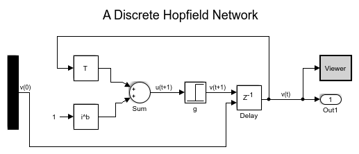
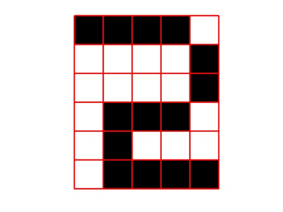

Solving Discrete Hopfield Networks using Simulink
Contents
Opening the model
To open the Discrete Hopfield Model in Simulink simply type in MATLAB:
open_system('discreteHopfieldNetwork')
 Associative memory
The discrete Hopfield model can be used a an associative memory network, storing patterns in the network and retrieve (or reconstruct) them from a similar pattern.
The patterns to be stored are patterns from 0 to 3
q0 = [0;1;1;1;1;0;1;0;0;0;0;1;1;0;0;0;0;1;1;0;0;0;0;1;0;1;1;1;1;0]; q1 = [0;0;0;0;0;0;1;0;0;0;0;0;1;1;1;1;1;1;0;0;0;0;0;0;0;0;0;0;0;0]; q2 = [1;0;0;0;0;0;1;0;0;1;1;1;1;0;0;1;0;1;1;0;0;1;0;1;0;1;1;0;0;1]; q3 = [0;0;0;0;0;0;1;0;1;0;0;1;1;0;1;0;0;1;1;1;1;1;1;1;0;0;0;0;0;0]; patterns = [q0,q1,q2,q3];
The network weights (which will store the patterns) can be obtained using the following synthax:
n = length(q0);
T = (2*q0 - 1)*(2*q0 - 1)' + (2*q1 - 1)*(2*q1 - 1)' + ...
(2*q2 - 1)*(2*q2 - 1)' + (2*q3 - 1)*(2*q3 - 1)' - eye(n);
ib = zeros(n,1);
Starting point
v0 = [0;0;1;0;0;0;1;0;0;0;0;1;1;0;0;1;0;1;1;0;0;1;0;1;0;1;1;0;0;0];
Simulating the network
[t,y] = sim('discreteHopfieldNetwork');
 Pattern found by the network
patternFound = find(all(patterns - y(end,:)' == 0))-1
patternFound =
2